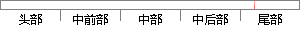

本系统采用前后端分离的设计架构。
片段位置图

相似结果|
相似片段 1：各个模块的功能，所以并没有涉及到每个模块的内部结构和细分功能。本章在基于概要设计的基础上，介绍系统的详细设计。4.1 模块间交互设计本系统为了扩展方便，采用的是前后端严格分离设计，即前后端不相互依赖
相似片段 2：功能模块的实现。5.1 系统运行环境系统采用的是面向资源系统架构，本系统的架构创新点是将前端和后端做了分离，采用的是前端 Node.js和 AngularJs，后端采用 Spring架构，后端仅提供
相似片段 3：视 传感器 视频处理单元 IP网络应用4应用3应用2应用1应用库数据库 存储单元 客户单元 客户单元控制单元图 3-5 系统逻辑框图3.4.2 物理架构本系统采用前后端混合的物理架构。视频处理单元布署
相似片段 4：如图 4-1所示。4.2 移动审批系统的详细设计移动审批系统的设计基于前后端分离，总体架构分为后台业务层，Node.js中间层以及前端展示层。Node.js层的引入使得前后端实现了彻底地分离开发
相似片段 5：本章分层描述了该框架的总体设计及各模块的主要功能，并给出了相应的实现方法。最后，本章提出了该框架下的多终端适配方案以及负载均衡方案。3.1 前后端分离框架的架构模型采用对前后端分离的思想进行系统架构
|
※ 片段修改建议 ※
近似词参考：- 采用：采取 接纳 采纳
- 前后：先后
- 分离：分手 离散 星散 分散
- 设计：计划
系统自动生成语句：本系统采取先后端分手的计划架构。
注：本片段修改建议为系统自动生成，仅供参考。